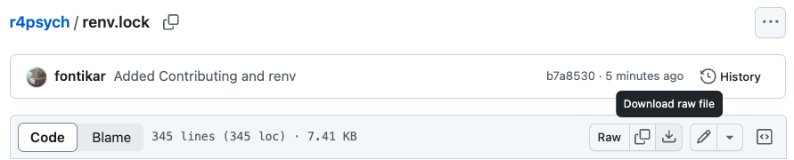

# install.packages(dplyr)
library(dplyr)1 Introduction
1.1 What you will learn
How to:
- Read your hard-earned data into R
- Wrangle and clean the data in a R-friendly format
- Produce summary statistics
- Analyse your data
- Visualise your findings
Pre-analysis stages:
Analysis stages:
1.2 How book is organised
This book is organised by data type (e.g. Survey data, Questionnaire data).
Each chapter will walk through the process will work with real-world Psychology data and will walk you through reading in data, to cleaning and eventually analysis and visualising the results.
1.2.1 Conventions
We will refer to packages as {dplyr} and functions as mean(). Variables and objects (such as file names or data objects) as age and mtcars. Where it would aid understanding, we will sometimes refer to functions within a particular packages as dplyr::mutute()
1.3 Prerequisites
Content drawn from existing resources such as https://r4ds.hadley.nz/intro#prerequisites
1.3.1 R
Download Point to intro to R content (RUWithme, Environmental Computing, Software Carpentry)
1.3.2 RStudio
RStudio projects Point to resource about Rproj (SWC)
Running R code https://r4ds.hadley.nz/intro#running-r-code
1.3.3 Version control with git
1.3.3.1 What is git?
1.3.3.2 Why do I need git?
1.3.4 R packages
Every code section will always begin with calls to R packages. There will be code that is commented out (have # preceding the code) for you to install these if you don’t have them on your computer
There are few R packages that will be on heavy rotation when it comes to working with Psychology data. #### {tidyverse}
{tidyverse} is a collection of R packages that is essential to a data scientist’s toolkit. By installing {tidyverse} you are actually installing 8 other packages. The ones we will most often use include:
The handy thing is, when you load the {tidyverse} library into R, it will load the core suite of packages for you instead of you loading each of them independently! Efficiency!! 🚀
library(tidyverse)Other packages that will be helpful for your R workflows include:
At the end of each chapter, we will also include our call to sessionInfo() so you can see what version of packages we are using.
1.4 Virtual environments
Speaking on what package versions as we write this book, we understand the R package space is constantly changing. This means sometimes code will break due to package updates and this is all part of the process! To combat this problem, we’ve enlisted renv to create a reproducible environment for building this book.
1.4.1 Download our virtual environment
The virtual environment used to build this book is stored in a lockfile. You can find this file in the GitHub repository where the source code of this book lives.
The lockfile is named renv.lock. You can download this file directly but clicking on the file name and clicking on the “Download raw file” button.

Alternatively, you can clone our repository into your computer. Learn more about cloning repositorsies and other GitHub workflows in Happy Git by Jenny Bryan.
Once you have this file downloaded, move it in a relevant project directory and then we can let {renv} work its magic.
1.4.2 Install
First things first, lets install renv if we don’t have it already.
install.packages("renv")
library(renv)1.4.3 Recreate virtual enviroment
Now let’s tell renv where our downloaded renv.lock file is. Specific the path to the file in the function restore() and you are good to go!
restore(lockfile = "path_to_renv.lock")